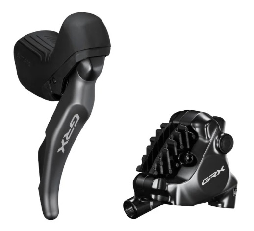
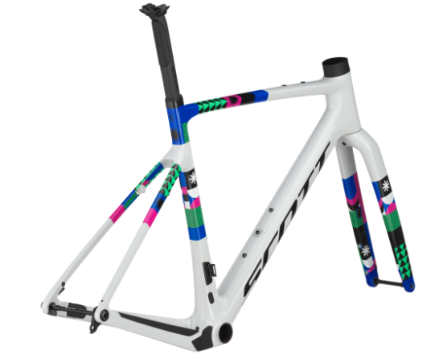
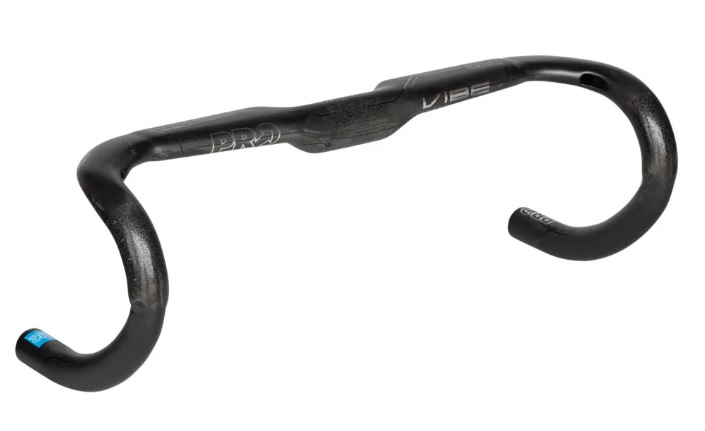
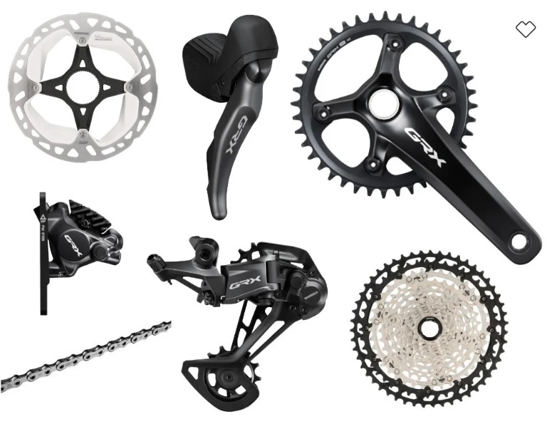
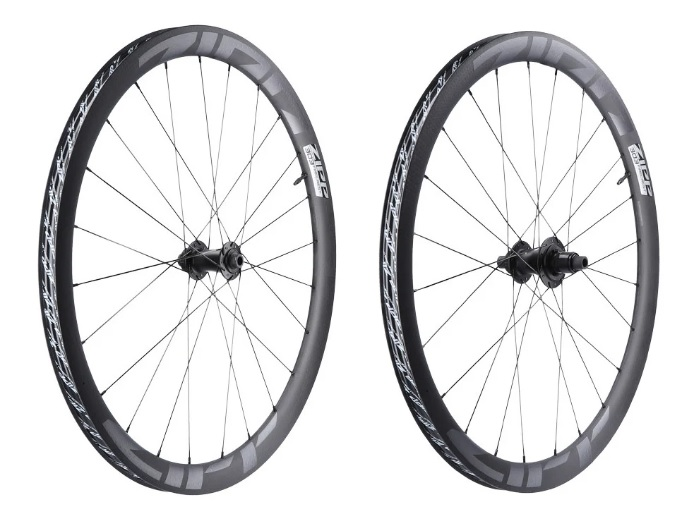

Gravel bike
A gravel bike, vagyis kavicsos útkerékpár egy sokoldalú típus, amely a klasszikus országúti kerékpárok és a terepre szánt bringák közötti átmenetet képviseli. Kifejezetten olyan bringásoknak készült, akik hosszabb távokat szeretnének megtenni változatos terepen, akár aszfalton, földúton vagy murván.
Fő jellemzők
- Fék: A gravel bike-ok szinte kizárólag tárcsafékkel készülnek, mivel ezek jobban teljesítenek sáros, poros vagy nedves körülmények között is. A hidraulikus tárcsafékek pontosabb fékezést és jobb adagolhatóságot biztosítanak, ami hosszú távokon és lejtmenetekben különösen fontos.
- Teleszkóp: A gravel bike-ok általában nem rendelkeznek rugóúttal, vagyis merev vázzal és villával érkeznek. Egyes modellek viszont már beépített, kis rugóutas első villával vagy rugalmas vázmegoldásokkal csillapítják az útegyenetlenségeket, de ezek általában max. 20–40 mm-es rugóúttal bírnak, nem a klasszikus MTB-s értékekkel.
- Vázanyag: A gravel bringák elérhetők alumínium, karbon, acél és titán vázzal is. Az alumínium vázas modellek kedvező ár-érték arányúak, míg a karbon változatok könnyebbek és jobb rezgéscsillapítással rendelkeznek. Az acélvázú gravel bike-okat sokszor túrázásra is használják, mivel strapabíróak és jól terhelhetők.
- Kormány: A gravel bike-okra jellemző a klasszikus országúti stílusú, ún. "dropbar" kormány, amely lefelé hajlik. Ez lehetővé teszi a változatos fogásokat, ami hosszú túrák során csökkenti a kéz fáradását. Sok gravel kormány enyhén oldalra is széttárt, ami jobb irányítást biztosít terepen.
- VáltásA teljes felfüggesztésű MTB-k is főleg 1x rendszerrel dolgoznak, gyakran 12 sebességes hátsó váltóval, ami kiválóan alkalmas technikás, változatos terepre. A váltókar finoman reagál, a váltás gyors és pontos, még saras környezetben is. Ezek általában már elektromos váltók, amiket akkumulátor működtet. Sárban és télen nagy előnyük van bowdenes váltókkal szemben. Nem állítódnak el, cserébe drágábbak.
- Kerékszett: A gravel bike-ok kerékszettjei robusztusabbak, mint a klasszikus országúti kerékpárokéi, de könnyebbek, mint a hegyikerékpároké. Általában 28” (700c) vagy 27,5” (650b) méretű kerekeket használnak. A szélesebb felnik és abroncsok (35–50 mm között) lehetővé teszik az alacsonyabb guminyomást, ami jobb komfortot és tapadást biztosít laza talajon, kavicson vagy erdei ösvényeken. Egyre gyakoribb a tubeless rendszer alkalmazása, amely belső nélküli használatot tesz lehetővé – ez csökkenti a defekt esélyét, és még kényelmesebb futást biztosít.




